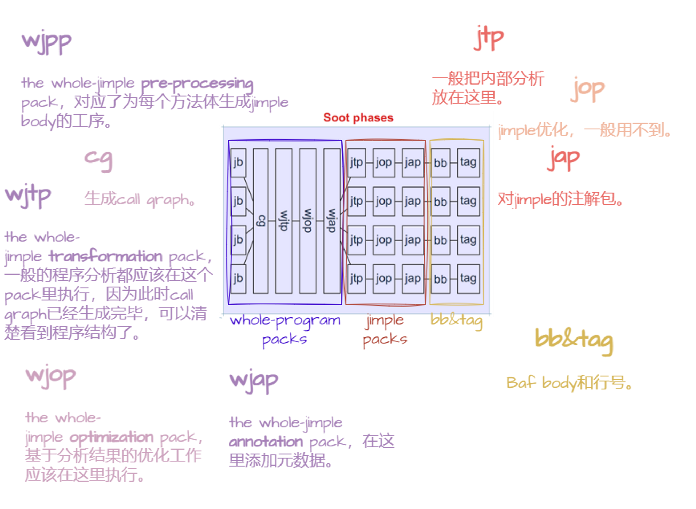
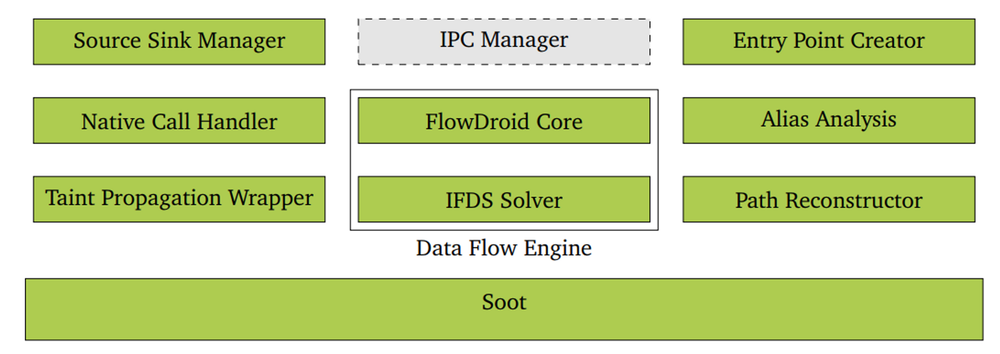

一些Soot和FlowDroid的学习记录
这段时间在学习使用Soot和FlowDroid进行静态分析，但苦于没有学过静态分析的知识，而文档和资料又太简陋（点名批评FlowDroid），对初学者非常不友好，所以尝试记录一些Soot和FlowDroid的知识，会持续更新。
Soot

Soot在不同阶段完成不同的工作，我们要做的只是在某些特定阶段添些工序，也就是加到待执行的任务集packs中。
FlowDroid

FlowDroid用于分析数据的source和sink，它可以有效剪去部分不会执行的路径，并且对于Android app，FlowDroid根据Android生命周期特别地进行了优化和抽取。它是基于Soot的封装，所以其分析基于Jimple进行。
给定source和sink，FlowDroid会采用IFDS算法进行求解，得到这两点之间所有可能的路径。此外，FlowDroid也包含一些其他组件，用以处理各种问题，比如Entry Point Creator会在不知道主要入口点（从而在生成call graph无从下手时）生成一个dummy entry point来解决问题。
参考资料（部分）
移动应用安全常用组件Soot、Flowdroid简介&基本使用-云社区-华为云
GitHub - noidsirius/SootTutorial: A step-by-step tutorial for Soot (a Java static analysis framework)
非常良心的教程，这才是真正的Tutorial
但说起来最重要的还是这几篇论文：
本博客所有文章除特别声明外，均采用 CC BY-NC-SA 4.0 许可协议。转载请注明来自 Vanilla Tiramisu's Cookbook！